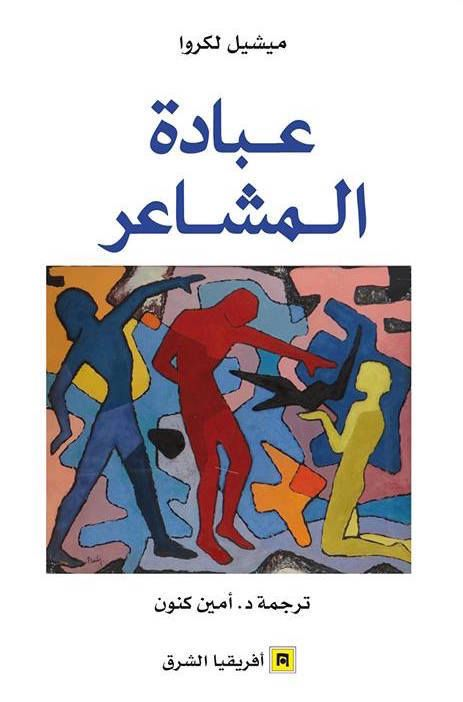
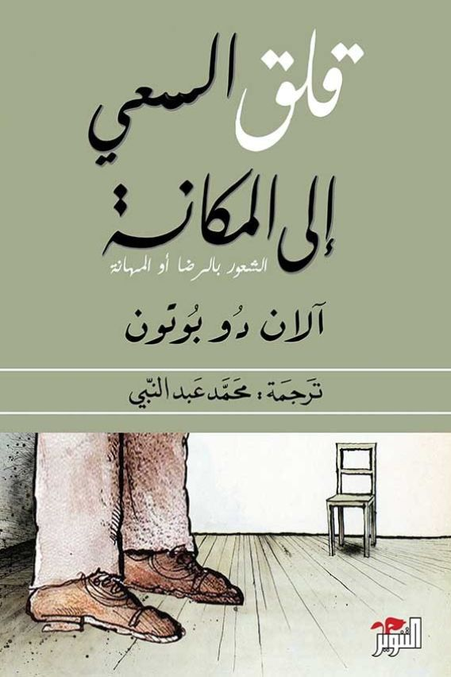
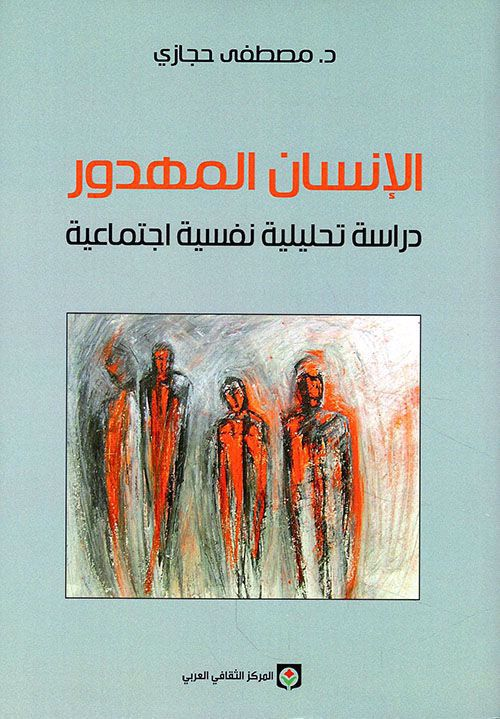

كتب علم النفس
مرر المؤشر على غلاف الكتاب لقراءة نبذة سريعة عنه.

عبادة المشاعر
يوضح الكتاب مدى تحكم المشاعر في حياة الإنسان المعاصر، ويبين كيف أصبحت مركزية في جميع مجالات الحياة، حتى اعتبرها الكاتب شكلاً من أشكال العبادة سماه "عبادة المشاعر".

قلق السعي إلى المكانة
يوضح دو بوتون أن سعينا لأن نكون محبوبين ومقدرين يتفوق على أي هدف آخر، وأن مكانتنا الاجتماعية تؤثر على حياتنا وصورتنا الذاتية، لكنه يتساءل: هل يستحق البحث عن المكانة كل هذه التضحيات؟

الإنسان المهدور
يقدم حجازي نموذجاً للإنسان العربي المهدور، مشيراً إلى قلة اهتمام علم النفس العربي بقضايا الإنسان المصيرية، ويكشف الفارق بين الإنسان المقهور والمهدور عبر فصول الكتاب ومقدمته.